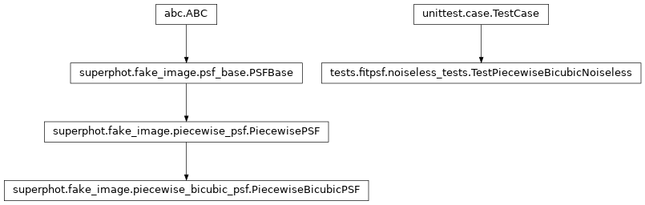
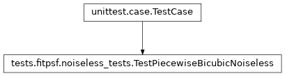

tests.fitpsf.noiseless_tests module¶
Class Inheritance Diagram¶
Create noiseless FITS files to test various tools on.
-
class
tests.fitpsf.noiseless_tests.TestPiecewiseBicubicNoiseless(methodName='runTest')[source]¶ Bases:
unittest.case.TestCaseTest piecewise bicubic PSF fitting on noiseless images.
-
check_results(psf_fit_fname, sources, extra_variables)[source]¶ Assert that fitted PSF map evaluates to expected PSFs for sources.
Parameters: - psf_fit_fname – The name of the file produced by fitpsf to check the PSF map of.
- sources – The sources argument used to generate the image that was fit. See same name argument of run_test.
- extra_variables – A list of the names of any variables in addition to x and y which participate in the PSF fit.
Returns: None
-
fitpsf_executable= '/home/kpenev/projects/git/SuperPhot/build/exe/fitpsf/debug/fitpsf'¶
-
run_test(sources, psffit_terms, extra_variables=None)[source]¶ Assert that a fit of a series of images works exactly.
Parameters: - sources –
A list of lists of dictionaries specifying the list of sources to fit. Each list of dictionaries specifies the sources to drop on a single image. Each source must contain the following:
- x: The x coordinate of the source center.
- y: The y coordinate of the source center.
- psf_args: The arguments with which to create the PiecewiseBicubicPSF for the source. See PiecewiseBicubicPSF.__init__ for details.
- psffit_terms – The terms on which PSF parameters depend on. See –psf.terms argument of the fitpsf command.
- extra_variables – A list of the variables in addition to x and y that participate in the fitting terms.
Returns: None
- sources –
-